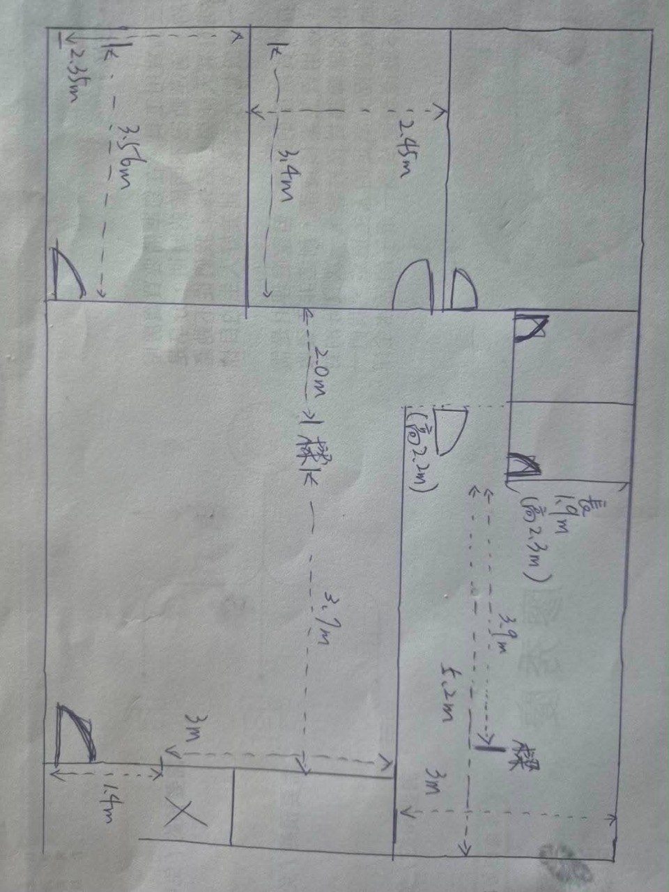
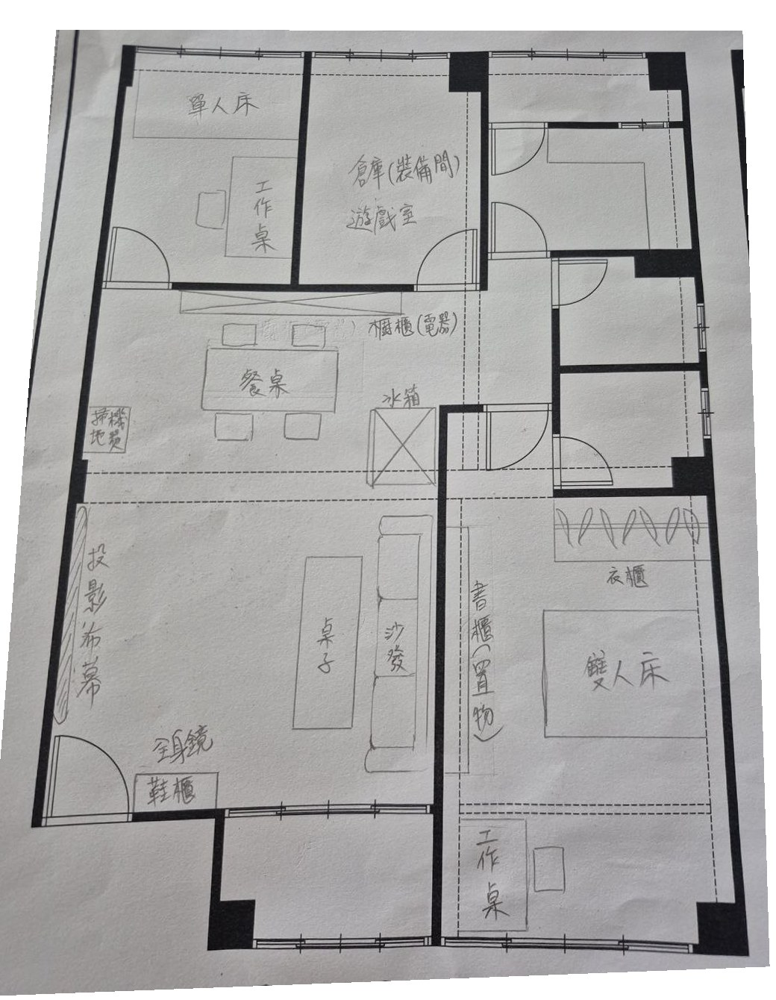

一份搞定：配置圖（看分布） + 你的真實家具版 + 逐房間走查清單（填細節）。這是你（客戶）的「需求定位」—— 列印帶著走一遍房子，勾填完連同家具圖交設計師 / 水電；配電 / 迴路圖是他們的責任。
這是你現場丈量的手稿，下面的配置示意圖與數量規劃都以這些尺寸為基準。

依你手繪的實際家具擺設把插座 / 開關 / 網路 / 專迴標上去。實心圓 = 牆面插座（嵌在牆線上）；橘色虛線方框 = 地板插座（家具離牆、必須走地插，例如餐桌邊、客廳茶几）。

每個房間標的是建議起點數量（插=插座／開=開關／網=網路孔／迴=220V 專迴／防=防水插座）。橘色虛線為大樑位。比例接近非施工圖。
建議起點，與走查清單一致。「插座」含一般 + 防水；專迴指 220V 獨立 NFB。實際以現場放樣為準。
| 區域 | 插座 | 開關 | 網路 | 220V 專迴 | 重點 / 用途 |
|---|---|---|---|---|---|
| 玄關 | 2 | 2 | – | – | 掃地機基座 · 烘鞋 · 感應夜燈 |
| 客廳 | 10 | 3 | 2 | 1 | 沙發兩側 + 背牆 · 媒體櫃 · 投影 · 弱電箱中樞 · 冷氣A |
| 餐廳 | 4 | 1 | 2 | – | 餐桌邊（桌面高）· 電腦工作區網孔 ×2 · 餐邊電器櫃 |
| 廚房 | 8 | 2 | – | – | 檯面 3–4 組 · 冰箱獨立 · 烤箱110V · 櫥下淨水 |
| 主臥 | 6 | 3 | 1 | 1 | 床頭+USB · 嬰兒床側 · 化妝桌 · 冷氣A |
| 次臥① | 5 | 2 | 1 | 1 | 床頭 · 書桌 · 冷氣B |
| 次臥② | 5 | 2 | 1 | 1 | 床頭 · 書桌/遊戲區 · 冷氣B |
| 浴室① 防 | 2 | 1 | – | 1 | 免治防水 · 鏡邊 · 暖風機專迴 |
| 浴室② 防 | 2 | 1 | – | 1 | 免治防水 · 鏡邊 · 暖風機專迴 |
| 後陽台 防 | 3 | 1 | – | 1 | 洗烘(防潑+RCD) · 熱水器 · 室外機 |
| 前陽台 防 | 1 | 1 | – | – | 景觀燈 · 掃地機備位 |
| 合計（起點） | ≈ 48 | ≈ 19 | 7 | 7 | 每房再 +1 組緩衝最保險 |
你的廚房用瓦斯爐 + 烤箱110V、無洗碗機 → 負載比一般輕，省下 IH / 烘碗機等好幾條高壓專迴。
| 220V / 獨立迴項目 | 條數 | 說明 |
|---|---|---|
| 迴 冷氣室內機位 | 4 | 客廳 + 主臥（室外機A 一對二）｜次臥①+② （室外機B 一對二）→ 室外機僅 2 台，但 4 個室內機位都要拉電 |
| 迴 浴室暖風機 | 2 | 每間一條，不可與免治 / 吹風機共迴 |
| 迴 後陽台洗烘 | 1 | 洗脫烘或洗+熱泵乾衣（評估中也先拉），防潑 + 漏電斷路器 RCD |
| 迴 電熱水器（視型式） | 0–1 | 若採電熱 / 強制排氣才需；瓦斯熱水器免 |
| 獨 冰箱獨立迴 | 1 | 避免與小家電共迴跳電影響冷藏（一般110V但獨立） |
| 專迴合計 | 7–8 | 配電箱總容量請水電核算，避免同時開跳電 |
| 弱電（網路）佈線 | 做法 |
|---|---|
| 中樞 弱電箱 / 主 Router | 設在客廳（對外光纖進線端），所有房間網路線回拉到這。主 Router 涵蓋客廳 / 餐廳 / 前陽台（南半部） |
| 回程 各房 Cat6 牆孔 | 主臥 / 次臥① / 次臥② 各 1 條、客廳 ×2、餐廳 ×2（電腦工作區） → 共 7 孔。Mesh 雖方便，但有線回程最穩，房內牆便宜時就埋 |
| AP Mesh AP ×1（次臥側） | 28 坪長型格局，客廳主機涵蓋不到北端（次臥 / 後陽台會弱）→ 在次臥側放 1 台 Mesh AP，插次臥網孔當有線回程（比無線回程穩一倍）。日後訊號不夠再加，但牆孔先留 |
高度水電會定，但你知道原則才能在現場喊「這個要高一點」。離地高度（cm）：
| 原則 | 用在哪 | 為什麼 |
|---|---|---|
| 雙切開關（兩處控同一燈） | 客廳（大門口 + 沙發旁） 主臥（房門口 + 床頭） 長走道兩端 | 進門開、坐定 / 躺床關，不用摸黑走回去。這是裝潢最有感的小錢。 |
| 玄關感應燈 | 玄關 / 走道 | 抱小孩 / 提東西手沒空時自動亮。 |
| 主燈 + 情境燈分開迴路 | 客廳、主臥、餐廳 | 看電影 / 哄睡時只開間照不開主燈。 |
| 調光開關 | 餐廳、主臥、嬰兒房 | 餐廳氣氛 + 半夜泡奶 / 換尿布不刺眼。 |
| 夜燈 / 感應小燈 | 主臥 → 主臥衛浴動線、嬰兒房 | 夜起不開大燈、不吵醒寶寶 / 另一半。 |
「建議」欄是我依你們的格局 + 電器決策填的起點；「要嗎 / 實際」欄你現場增減。專迴項（220V）已對應裝潢頁第 9 區。
| 位置 / 用途 | 類型 | 建議 | 高度 | 要嗎 | 實際 |
|---|---|---|---|---|---|
| 鞋櫃旁插座（烘鞋機 / 電子鎖備援電源） | 插座 | 1 | 30 | ☐ | |
| 掃地機器人基座（玄關常見擺位） | 插座 | 1 | 30 | ☐ | |
| 玄關燈開關（+ 客廳燈雙切） | 開關 | 1 | 125 | ☐ | |
| 感應夜燈（抱小孩進門手沒空） | 開關 | 1 | — | ☐ |
| 位置 / 用途 | 類型 | 建議 | 高度 | 要嗎 | 實際 |
|---|---|---|---|---|---|
| 沙發兩側（手機充電 / 立燈 / 按摩椅） | 插座 | 2–4 | 30 | ☐ | |
| 投影機主投放位（茶几 / 邊櫃）網路 | 插座 | 1–2 | 30 | ☐ | |
| 媒體櫃（擴大機 / 串流盒 / router）網路 | 插座 | 2–3 | 30 | ☐ | |
| 投影布幕牆（電動布幕才需電源） | 插座 | 0–1 | 頂端 | ☐ | |
| 客廳冷氣（室外機 A，與主臥共用）220V | 專迴 | 1 | 220+ | ☐ | |
| 弱電箱 / router 集線位置網路 | 插座 | 1 | 30 | ☐ | |
| Wi-Fi AP 佈點（客廳側）網路 | 插座 | 1 | 依點 | ☐ | |
| 空清 / 除濕機（機動） | 插座 | 1–2 | 30 | ☐ | |
| 落地窗邊（季節 / 聖誕樹 / 寶寶遊戲區） | 插座 | 1 | 30 | ☐ | |
| 客廳主燈 + 間照分迴 + 沙發旁雙切 | 開關 | 2–3 | 125 | ☐ |
| 位置 / 用途 | 類型 | 建議 | 高度 | 要嗎 | 實際 |
|---|---|---|---|---|---|
| 餐桌邊牆面（火鍋 / 氣炸鍋 / 桌上小家電）超常忘！ | 插座 | 2 | 30 | ☐ | |
| 電腦工作區網路孔（桌機 / 視訊 / 大檔上傳，有線最穩）常用電腦要！網路 | 網孔 | 2 | 110 / 30 | ☐ | |
| 餐邊 / 電器櫃（電鍋 / 熱水瓶 / 咖啡機） | 插座 | 2–3 | 110 | ☐ | |
| 餐廳燈（建議可調光） | 開關 | 1 | 125 | ☐ |
| 位置 / 用途 | 類型 | 建議 | 高度 | 要嗎 | 實際 |
|---|---|---|---|---|---|
| 冰箱（建議獨立插座） | 插座 | 1 | 30 / 側 | ☐ | |
| 檯面上方（微波 / 電鍋 / 快煮壺 / 咖啡機 / 氣炸） | 插座 | 3–4 組 | 110 | ☐ | |
| 烤箱（110V，建議獨立迴別跟小家電擠） | 插座 | 1 | 櫃內 | ☐ | |
| 抽油煙機 | 插座 | 1 | 高處 | ☐ | |
| 瓦斯爐旁（電池點火 / 檯面小物） | 插座 | 1 | 110 | ☐ | |
| 廚下淨水 RO（櫃內，需排水） | 插座 | 1 | 櫃內 | ☐ | |
| 廚房主燈 + 檯面下照明開關 | 開關 | 2 | 125 | ☐ |
| 位置 / 用途 | 類型 | 建議 | 高度 | 要嗎 | 實際 |
|---|---|---|---|---|---|
| 床頭兩側（含 USB 充電） | 插座 | 2–4 | 60–75 | ☐ | |
| 嬰兒床側（夜燈 / 監視器 / 暖奶器 / 加濕器） | 插座 | 1–2 | 60 | ☐ | |
| 主臥冷氣（室外機 A）220V | 專迴 | 1 | 220+ | ☐ | |
| 化妝 / 書桌（做中版系統櫃）網路 | 插座 | 1–2 | 110 | ☐ | |
| 機動（除濕機 / 掃地機 / 未來電視投影） | 插座 | 1 | 30 | ☐ | |
| 主燈雙切（房門口 + 床頭）+ 閱讀燈 | 開關 | 2–3 | 125 | ☐ | |
| 夜燈（往主臥衛浴動線） | 開關 | 1 | — | ☐ |
| 位置 / 用途 | 類型 | 建議 | 高度 | 要嗎 | 實際 |
|---|---|---|---|---|---|
| 床頭（含 USB） | 插座 | 1–2 | 60 | ☐ | |
| 書桌（未來，含網路孔）網路 | 插座 | 2–3 | 110 | ☐ | |
| 次臥冷氣（室外機 B，兩次臥共用一台室外機）220V | 專迴 | 1 | 220+ | ☐ | |
| 機動（空清 / 加濕 / 未來改用途） | 插座 | 1 | 30 | ☐ | |
| 主燈雙切 + 夜燈 | 開關 | 2 | 125 | ☐ |
| 位置 / 用途 | 類型 | 建議 | 高度 | 要嗎 | 實際 |
|---|---|---|---|---|---|
| 床頭（含 USB，二寶階段才用） | 插座 | 1–2 | 60 | ☐ | |
| 書桌 / 遊戲區牆面（含網路孔）網路 | 插座 | 2 | 110 / 30 | ☐ | |
| 次臥冷氣（同室外機 B）220V | 專迴 | 1 | 220+ | ☐ | |
| 機動（彈性間 — 空清 / 未來書房 / 客房） | 插座 | 1–2 | 30 | ☐ | |
| 主燈雙切 + 夜燈 | 開關 | 2 | 125 | ☐ |
| 位置 / 用途（每間都要） | 類型 | 建議 | 高度 | 要嗎 | 實際 |
|---|---|---|---|---|---|
| 三合一暖風機（各自專迴，不可與免治 / 吹風機共迴）220V | 專迴 | 1 / 間 | 高處 | ☐ | |
| 免治馬桶（防水插座 + 進水）防水 | 插座 | 1 / 間 | 馬桶側 | ☐ | |
| 鏡邊（吹風機 / 電動牙刷 / 化妝）防水 | 插座 | 1 / 間 | 110 | ☐ | |
| 暖風機控制面板 + 主燈 + 抽風開關 | 開關 | 門外 | 125 | ☐ |
| 位置 / 用途 | 類型 | 建議 | 高度 | 要嗎 | 實際 |
|---|---|---|---|---|---|
| 洗衣機 / 洗脫烘（高於機身防潑，需進排水）防水 | 插座 | 1–2 | 110–120 | ☐ | |
| 熱泵乾衣機（若走獨立組合，+1 插座）防水 | 插座 | 0–1 | 110 | ☐ | |
| 洗烘預留專迴（評估中也先拉）220V | 專迴 | 1 | 110 | ☐ | |
| 電熱水器（若用電熱式）220V | 專迴 | 0–1 | 高處 | ☐ | |
| 冷氣室外機 ×2 電源（從冷氣專迴來，確認位置） | — | 2 | 依機 | ☐ | |
| 機動（除濕 / 工具 / 清潔）防水 | 插座 | 1 | 110 | ☐ | |
| 後陽台燈 + 洗衣區照明 | 開關 | 1–2 | 125 | ☐ |
| 位置 / 用途 | 類型 | 建議 | 高度 | 要嗎 | 實際 |
|---|---|---|---|---|---|
| 機動（景觀燈 / 植栽 / 掃地機備位）防水 | 插座 | 1 | 30 | ☐ | |
| 陽台燈 | 開關 | 1 | 125 | ☐ |
事前多一個插座 ≈ 幾百元；入住後要加得打牆走明線、補土重漆，貴 5–10 倍還毀裝潢。估完數量，每房再 +1 組緩衝。
每台冷氣、浴室暖風、後陽台洗烘、冰箱各自獨立 NFB，不與他人共用。你只要說「這裡會放 X」，迴路線徑與安培交給水電算。
對外網路進客廳放主 Router，每房拉 1 條 Cat6 回客廳。現在用 Mesh 方便，但有線回程最穩，趁牆面打開時預埋最便宜。
全室一般插座選附防觸電安全門的面板，價差不大但省心；低位（30cm）插座尤其要。嬰兒床側那組更要留意。